History of Aerobatics and aviation
Airshows have been around since before World War 2, when they would mostly consist of long distance races that could last many days. Today, airshows are a way for pilots to demonstrate their technical capabilities in various different aerobatic maneuvers. Many of these maneuvers created for artistical purposes at first were later used in war to gain aerial advantages.
The beginnings of aviation and aerobatics
Aviation started hundreds of years ago with people flying in ballons as early as 1783, however it wasn't until 1903 that the first heavier than air aircraft was flown for the first time. Even tough this aircraft was a plane that could be maneuvered, we would have to wait another 10 years until 1913 before aerobatics were invented. In order to be able to perform aerobatics, you need to have the capability of flying inverse or upside down. This wasn't possible with early planes as they had gravity-fed fuel systems, meaning that the fuel was stored in the wings and gravity would lead the fuel into the engines. If these planes were flown upside down, the engine would lose fuel and stall.
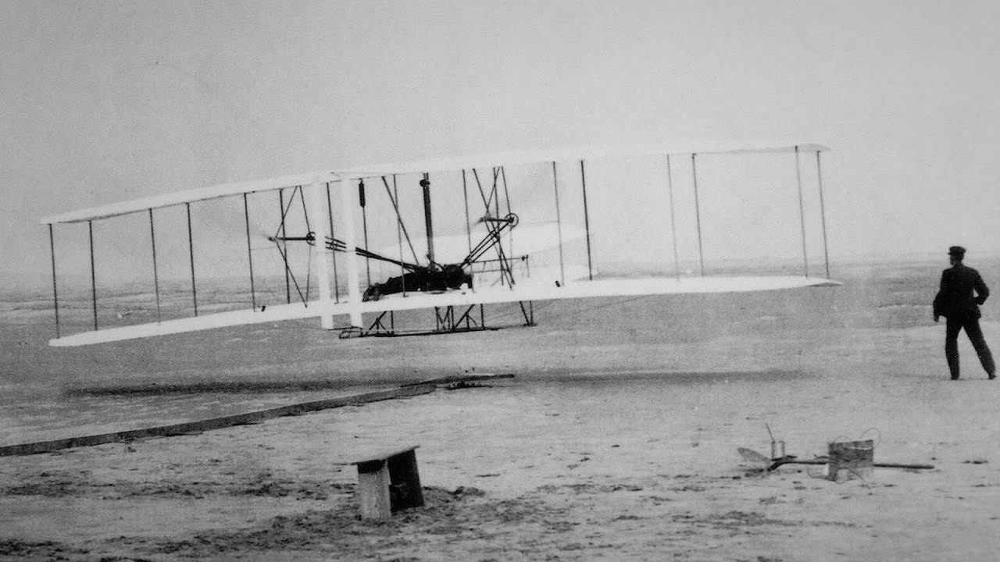
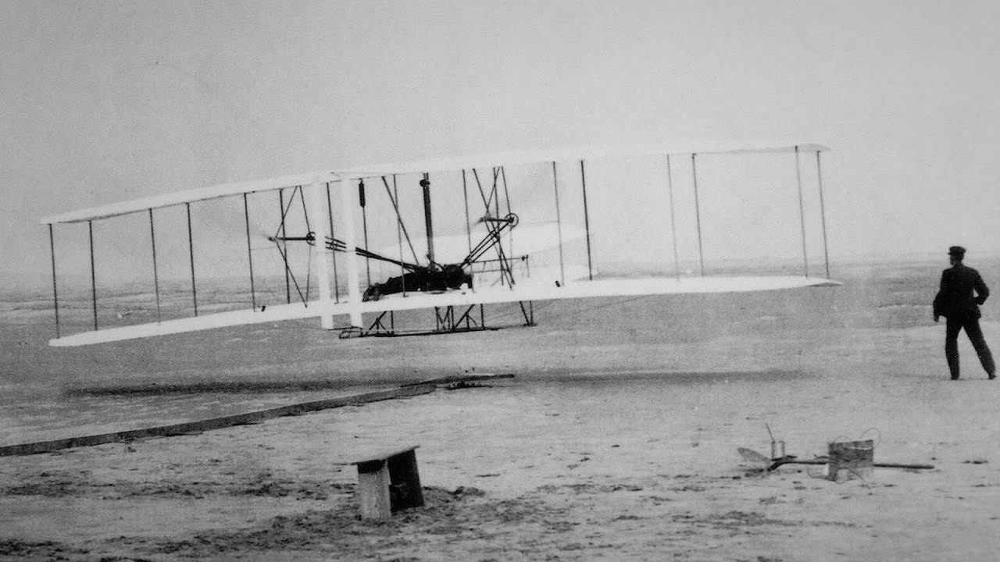
World War I
In the first year of the war, planes were mainly used for reconnaissance. However in the second year, planes were armed with weapons and aerobatics becaming a key in battles between fighter planes. During this period, new maneuvers were discovered by fighter pilots on the battlefield trying to evade enemy aircraft, notably by German pilot Max Immelmann who invented the Immelmann turn. This maneuver was useful for diving pass enemies and quickly pulling up to go above them so that you can dive over them again letting you fire your bullets at the enemy. During this war, military aircraft were used for bombing for the first time. Planes only flew at speeds of 100 mph and signals were done by rocking the wings.
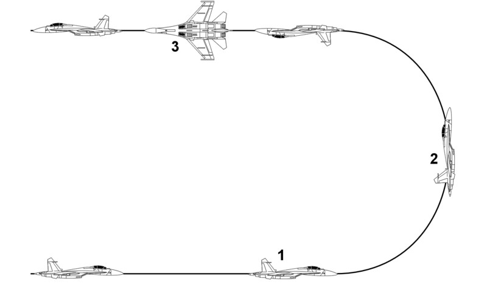
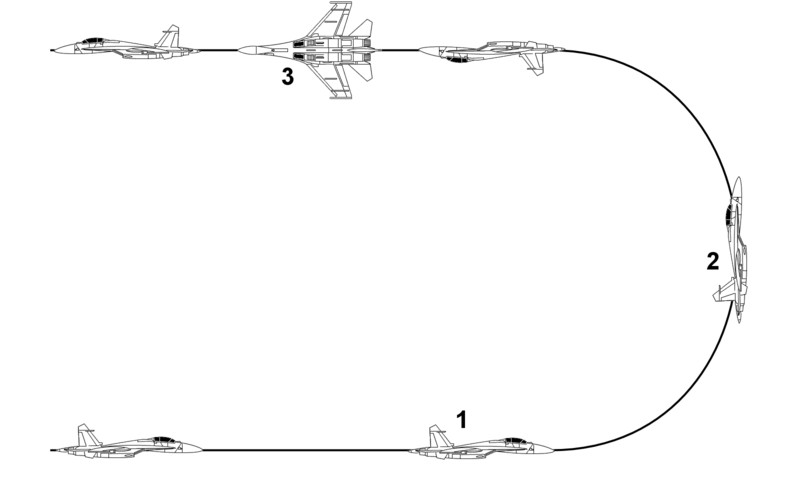
Jet Era
The first jets appeared at the end of World War II, but they weren't utilized during the war. These jets could fly at twice the speed of sound and reach altitudes of 50,000 feet. These new aircraft had great vertical mobility but couldn't turn with rapid speed, so new maneuvers were invented for vertical dogfights. In order to evade shots from enemy jets, the scissors maneuver was used to roll away back and forth forcing the enemy jet to overshoot your position.
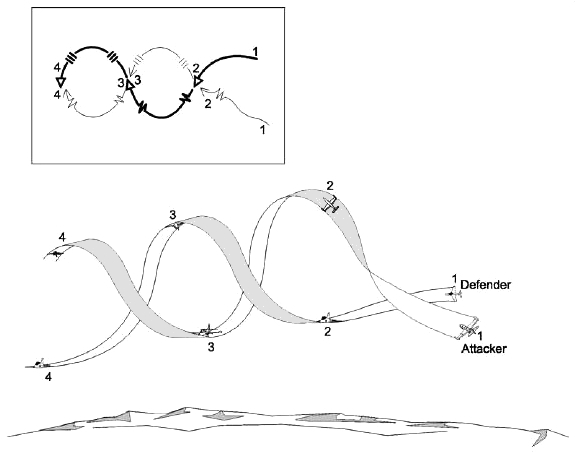
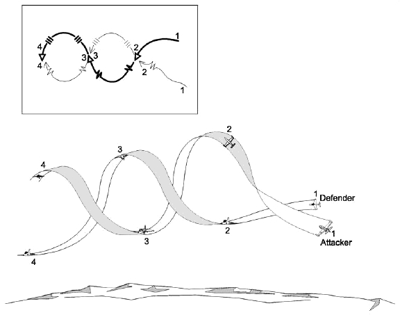
Future of aviation
Air transport is becoming more and more frequent growing by 4.1% every year. With 4.1 billion passengers using air transport in 2017, approximately 2% of all human carbon emissions come from air travel. With an industry growing this fast, Scientists have designed planes with zero emissions powered by electricity and solar panels. Designs like the eagle, a 755 passenger aircraft, with zero emissions are predicted to be available by 2030, however scientists are also critical saying that they only have 40% of the technology required for an aircraft like the eagle.
Aircraft running on renewable fuel such as biofuels are also another alternative to help the environment. These biofuels can reduce emissions from 20-98% compared to conventional jet fuel, however planes running fully on biofuel are not available yet, they use a blended fuel that is a mix of 50% biofuel. However, scientists believe that by the end of the decade fully biofueled planes could be available.
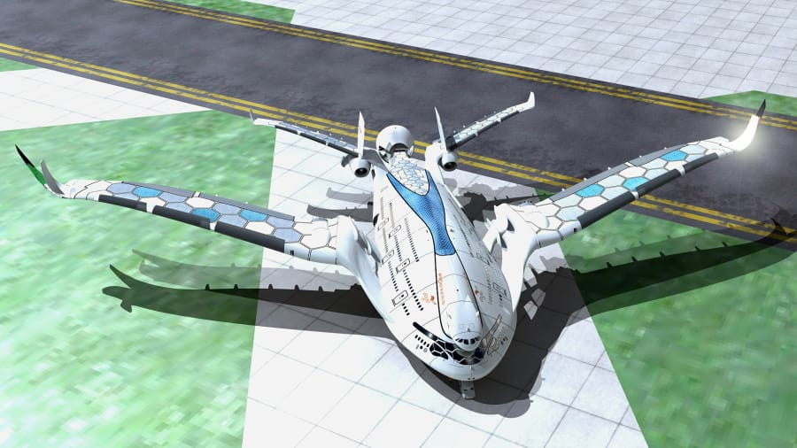 Design of the Eagle
Louis Blériot and Adolphe Pégoud
Aviator Louis Blériot and test pilot Adolphe Pégoud were pioneers of aerobatics. Blériot designed a plane that had fuel injected directly into the engine making it possible to fly upside down without stalling the aircraft. 10 years after the Wright Brother's took flight, Adolphe Pégoud, who was test pilot for Blériot, flew the Blériot XI upside down, which was the first ever plane to have flown in inverse. This flight was the birth of aerobatics. In 1913, during the first airshow ever, Pégoud flew a loop.
Blériot XI: 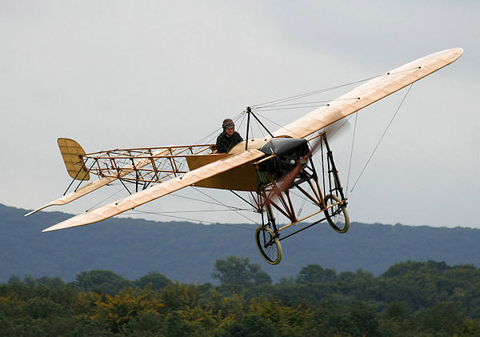
Blériot XI: 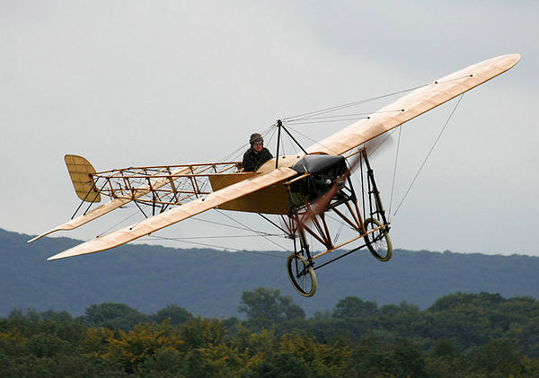
World War II
During World War II, planes reached speeds of 400 miles per hour and could go up to 30,000 feet in altitude. Pilots were able to communicate with each other using radio communications. A new aerobatic maneuver was invented for fighter planes to attack bombers called the split-S. This maneuver consisted of attacking the bomber from head-on shooting at it and at the last moment diving downwards to avoid crashing into the bomber, but also starting the roll before diving but keeping the nose pointed towards the target.
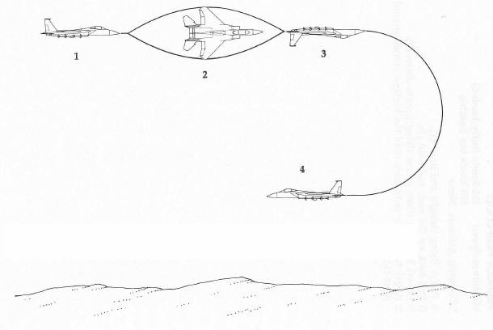
Aerobatic stardom
During the years preceding World War II, inventive and daring pilots become aerobatic stars. In 1920, french pilot Alfred Fronval becomes famous as he sets a record for most loops done with 962 loops in 3 hours and 52 minutes. German stunt-pilot Ernst Udet becomes a movie-star after fighting in World War I as an ace pilot. American pilot Jimmy Doolittle famous for winning flying races and flying record coast-to-coast flights across the United States. The period between World War I and II, became known as the Golden Age of Flight.
Jimmy Doolittle on his record setting flight across the United States: 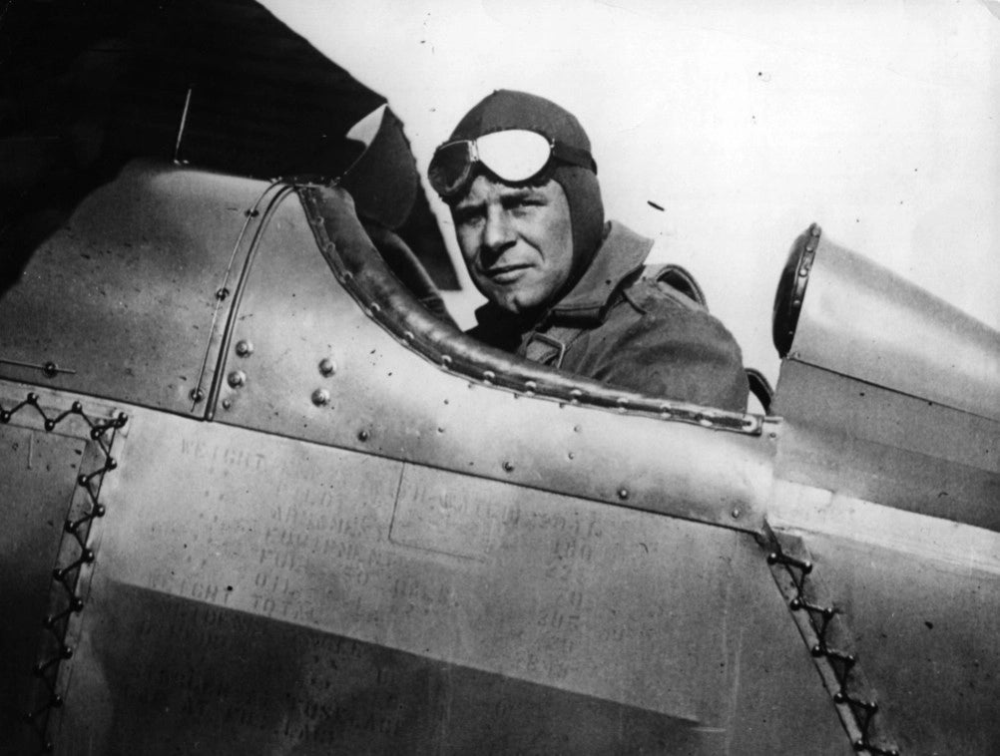
Jimmy Doolittle on his record setting flight across the United States: 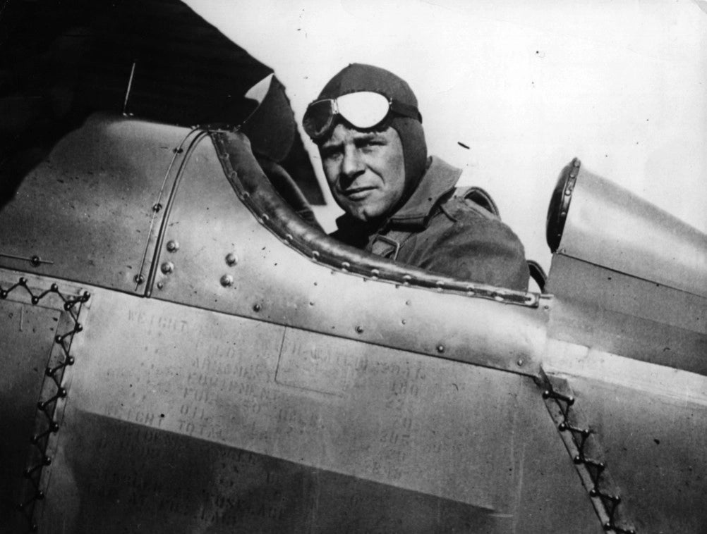